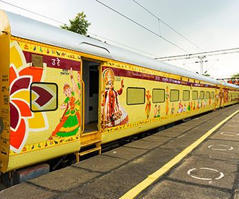
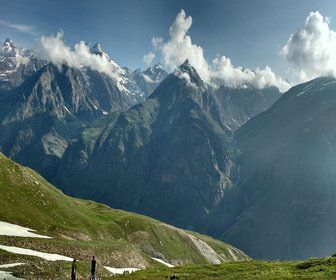

HOLIDAYS
Maharajas'express
 Redefining Royalty, Luxury and Comfort, Maharajas' express takes you
on a sojourn to the era of bygone stately splendour of princely states.
Sylvan furnishings, elegant ambience and modern amenities are amalgamated
for an “Experience Unsurpassed”. It has been a winner of “World’s Leading \
Luxury train” by World Travel Awards consecutively for last six years.
Redefining Royalty, Luxury and Comfort, Maharajas' express takes you
on a sojourn to the era of bygone stately splendour of princely states.
Sylvan furnishings, elegant ambience and modern amenities are amalgamated
for an “Experience Unsurpassed”. It has been a winner of “World’s Leading \
Luxury train” by World Travel Awards consecutively for last six years.
International packages
 Best deals in International Holiday packages, handpicked by IRCTC, for
Thailand, Dubai, Sri Lanka, Hong Kong, China, Macau, Bhutan, Nepal, U.K.,
Europe, USA, Australia etc. The packages are inclusive of sightseeing,
meals, visa charges and overseas medical insurance to give you a hassle-free
and memorable experience.
Best deals in International Holiday packages, handpicked by IRCTC, for
Thailand, Dubai, Sri Lanka, Hong Kong, China, Macau, Bhutan, Nepal, U.K.,
Europe, USA, Australia etc. The packages are inclusive of sightseeing,
meals, visa charges and overseas medical insurance to give you a hassle-free
and memorable experience.
Domestic air packages
 Be it the spiritual devotee seeking blessings of Tirupati, Shirdi or Mata
Vaishno Devi or the leisure traveller wanting to relish the Blue mountains
of North East, Sand-dunes of Rajasthan, Hamlets of Ladakh, Wonders of Himalayas,
Serene lakes or Picturesque Islands, IRCTC has it all. Discover India through
IRCTC!
Be it the spiritual devotee seeking blessings of Tirupati, Shirdi or Mata
Vaishno Devi or the leisure traveller wanting to relish the Blue mountains
of North East, Sand-dunes of Rajasthan, Hamlets of Ladakh, Wonders of Himalayas,
Serene lakes or Picturesque Islands, IRCTC has it all. Discover India through
IRCTC!
Bharat Gaurav Tourist Train

Railways operates Bharat Gaurav Tourist Train having AC III-Tier accommodation
on train specially designed to promote domestic tourism in India. This train
runs on various theme based circuits covering pilgrimage and heritage destinations
in its itinerary on a 5 days to 20 days trip and showcase India’s rich cultural
heritage.
Rail Tour Package

RAILWAYS offers Exclusive Rail tour packages with confirmed train tickets,
sight-seeing and meals for enchanting Nilgiri Mountains, Darjeeling, Kullu Manali,
Kashmir, Gangtok or divine tours of Mata Vaishno Devi, Rameswaram, Madurai, Shirdi,
Tirupati etc. Holiday packages/ Land packages to these destinations
are also available.